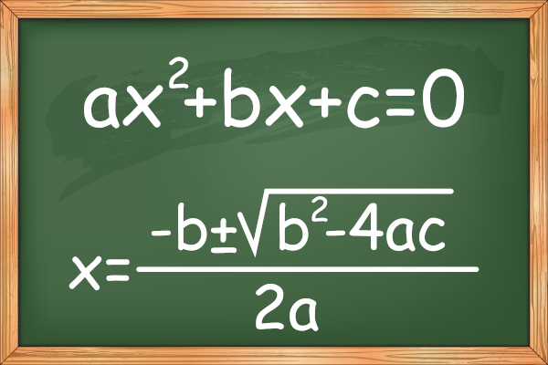

|  | Definimos uma equação de 2° grau um polinômio do tipo Ax2+Bx+C, em que A, B e C são
números reais e A deve ser diferentes de zero. Existem dois tipos de equações de 2° grau, as completas e as incompletas. Os exercícios
são resolvidos por meio da fórmula de Bhaskara ou por soma e produto.
|
O valor do delta nos dá três possibilidades de respostas, sendo elas: